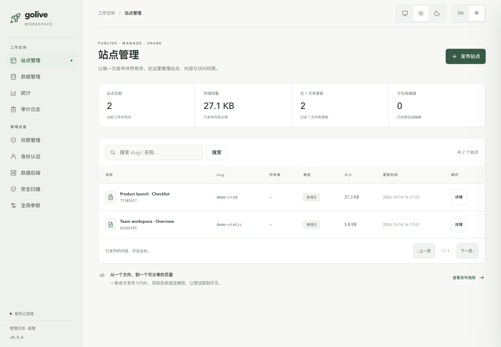

自主部署 / 开源工具
交出一个 HTML 文件，
拿回一个真正的网站。
把报告、看板和内部工具发布成网站，配好安全扫描、站点权限和持久化数据。通过 CLI 或 Agent 操作，一切运行在你自己的基础设施上。
SQLite · PostgreSQL · MySQL · Supabase
$ pip install html-golive $ golive publish q3-report.html --slug q3-report 🔍 扫描凭证与隐私… 干净 🎨 样式：minimal · 资源已内联（4 → 1 个文件） 📦 已发布 短域名 q3-report 地址 http://localhost:8787/q3-report 大小 86 KB · 已存快照 #1
HTML → 可访问链接你的服务器 · 你的数据


01 / 自己的基础设施
为什么会有这个工具
你手上有个 HTML 文件——一份报告、一个看板、一个内部小工具——需要挂到 一个同事能打开的地址上。常见的两条路：要么用碰不到你数据的云平台， 要么起一个只当文件服务器的裸 nginx。html-golive 走中间：自己跑起来， 数据不出内网，同时该有的便利一样不少。
数据留在你这儿
完整跑在你自己的机器或服务器上。不用注册账号，没有埋点，默认零外呼——断网环境照样能用。
零配置起步
安装后即可使用本地文件系统与 SQLite，无须先开数据库服务或对象存储。
跟着你一起长大
SQLite、PostgreSQL、MySQL、Supabase 通过配置切换；HTML 另存本地、Supabase Storage 或 S3 兼容存储。
02 / 发布工具箱
你会得到什么
从发布到协作：安全扫描、分级权限、四种数据库和管理工作台，都在同一套工具里。
发布与回滚
每次发布都会给上一版存快照，golive rollback 随时退回任意一版。
安全扫描与发布拦截
发布前识别 API key、私钥、连接串和个人敏感信息；强凭证命中直接拦截。在线保存与导入也执行扫描，支持扩展规则和可选 LLM 复核。
身份认证与站点权限
Token / OIDC 验证身份，owner、maintainer 与超级管理员分级管理站点；管理操作和权限变更写入审计日志。
给静态页面的数据库
window.TemplateAPI 提供统一 CRUD。SQLite / PG / MySQL 经服务端代理，Supabase 公开密钥通过 RLS 限定权限。
在浏览器里改
owner 和 maintainer 能在线上页面直接编辑——改个错别字不用回去动源文件。保存同样会扫描并存快照。
管理后台
/admin 支持亮暗主题、中英双语、全局参数修改、站点权限、数据管理和准确的数据库连接诊断。
19 套内置样式
--style 把一份没有样式的文档变得能见人。字体走公共 CDN 或你自己的镜像。
克隆任意页面
golive clone <url> 抓取一个公开页面，内联它的资源，再作为你自己的站点重新发布。
开箱即用的 Docker
提供 Dockerfile 和 compose 文件（含可选 MinIO profile），一条命令从零到服务跑起来。
03 / 管理工作台
管理工作台
亮暗主题、中英双语、可修改的全局参数，以及四种数据库的连接诊断。

04 / 第一次发布
快速开始
三步，大约一分钟。开始之前不需要写任何配置文件。
安装
需要 Python 3.9+。MySQL 安装 html-golive[mysql]，PostgreSQL 安装 html-golive[postgres]。
发布一个页面
指向任意 HTML 文件即可。它会扫描凭证、套用样式、内联资源并登记站点。
把它跑起来
本地验证请显式监听 127.0.0.1。配置可能改变默认监听地址；需要共享时再设置访问控制。
05 / 架构与后端
架构
三层可插拔接口。从左边这列起步，撑不住了再往右换——你的命令和你的页面 都不用改。
存储
- local 本地文件系统（默认）
- supabase storage bucket
- s3 MinIO / COS / OSS / TOS
注册表
- sqlite 单文件（默认）
- postgres / mysql 服务端 DSN
- supabase PostgREST 表
数据层
- sqlite / postgres / mysql 服务端代理
- supabase 页面直连，GRANT + RLS
- none 可选关闭数据层
身份
- none 仅本机访问
- token 共享令牌
- oidc Google、Okta、Keycloak…
06 / 交给你的 AGENT
让你的 Agent 负责发布
通过 CLI 和随包 Skill 接入支持命令执行的 Agent，完成发布、回滚、数据管理与验证。按 Agent 选择 Skill 安装目录，无须绑定某个客户端。
golive skill install
golive skill status
07 / 命令速查
命令速查
发布、运行、数据、迁移与诊断，覆盖完整使用流程。
| 命令 | 作用 |
|---|---|
publish | 扫描、套样式、内联资源并部署一个 HTML 文件 |
list | 列出所有已登记站点，含大小和 owner |
rollback | 回滚到之前的某个快照 |
serve | 启动 HTTP 服务和管理后台 |
preview | 本地预览一个文件，不登记站点 |
clone | 抓取一个公开页面并重新发布 |
maintainer | 给某个站点授予或撤销编辑权限 |
admin | 打开管理后台 |
styles | 列出 19 套内置视觉样式 |
data / db | 查看和管理数据后端 |
migrate-check | 找出 HTML 里跟特定环境绑死的引用 |
verify | 真实 HTTP、页面注入与数据库读写自检 |
export / import / migrate | 备份恢复与后端迁移 |
skill | 安装并检查 AgentSkill 版本 |
doctor | 诊断配置和连通性 |